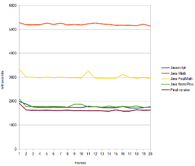
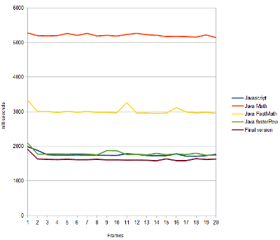

Javascript aux petits oignons
Avant propos
Pourquoi faire du JS de nos jours ?
- Des applications de plus en plus riches
- HTML5 + JS s'imposent comme standard (abandon de Flash par Adobe)
- Compatible sur quasiment toutes les plateformes
- Aucune alternative pour le moment
Lexique
| JS | JavaScript |
| DOM | Document Object Model presents presents an HTML document as a tree-structure. |
| CSS | Cascading StyleSheet |
| AJAX | Asynchrnous Javascript And [Xml] |
| JSON | JavaScript Object Notation |
I. Le constat

Quick and dirt cookbook
La technique du copy/paste
Quelques exemples de bon code JS
function hello(what) {
what = "world";
return "Hello, " + arguments[0] + "!";
}
> hello("shazow")
"Hello, world!"
9999999999999999
//=> 10000000000000000
Côté serveur tout est ok
- Convention de nommage
- Organisation du code
- Best practices
- Design pattern
- Tests unitaires
- Code coverage
Et côté client ?
Et côté client ?
- Des librairies se télescopent
- Code non testé
- Tout est chargé partout (et n'importe comment)
- Code spécifique pour un navigateur
Et côté client ?
- Qui a déjà débuggué du code JS ?
- Qui a déjà réutilisé son code JS ?

II. Rétrospective
Comment en est-on arrivé là?
La théorie du barbue
John McCarthy
LISP - 1958

Dennis Richie
C - 1973

Bjarne Stroustrup
C++ - 1983

Guido van Rossum
Python - 1991

James Gosling
Java - 1995


And Javascript...
Brendan Eich
Javascript - 1995

WTF!
Est-ce la seule explication?
Bonus
Martin Odersky
Scala - 2003

Retour sur le langage
Il faut tout de même le dire:

JavaScript (sometimes abbreviated JS) is a prototype-based scripting language that is dynamic, weakly typed and has first-class functions. It is a multi-paradigm language, supporting object-oriented, imperative, and functional programming styles.Source : Wikipédia
Les moteurs
| Naviguateur | Hors Naviguateur | |
|---|---|---|
| V8 | Chrome | Node.js |
| SpiderMonkey | Netscape | - |
| JägerMonkey | Firefox | - |
| Nitro | Safari | - |
| Rhino | - | JVM |
| Nashorn | - | JVM |
| Chakra | IE9 | MSHTML.dll ? |
Historique
Modèle objet
- Tout est objet sauf null et undefined
- Les nombres sont aussi des objets mais attention:
2.toString(); //raises SyntaxError2..toString(); (2).toString(); 2 .toString();
JavaScript Object Notation

var a = {}; // == var a = new Object();
var myObject = {
foo : true, // != myObject.prototype.foo
bar : 'baz',
'case' : 1,
init : function(param){
return param || null;
}
};
Prototype
- Modèle objet sans classes!
- Chaque objet a un prototype
- Les membres du prototypes sont propres à l'instance
hasOwnProperty() - Le prototype est mutable
- L'héritage se fait via une chaîne de prototype uniquement
- Plus souple que les classes
- Un prototype peut être vu comme un exemplaire modèle d'une famille d'objet
A simple object
>
//constructor
var Person = function(firstName, lastName) {
this.firstName = firstName;
this.lastName = lastName;
};
//add a method to the prototype
Person.prototype.toString = function() {
this.firstName + ' ' + this.lastName;
};
Prototype Chain - Inheritance
>
var Person = {};
var Developer = function() {
var F = function () {}; //create a fake object
F.prototype = Person; //assign Person's prototype to it
return new F(); //return an instance of fake
};
Person.name = 'Resig';
Person.firstname = 'John';
var jr = new Developer();
console.log(jr.name); //Resig
Object.create since EcmaScript 5
>
var a = {a: 1};
// a ---> Object.prototype ---> null
var b = Object.create(a);
// b ---> a ---> Object.prototype ---> null
console.log(b.a); // 1 (inherited)
var c = Object.create(b);
// c ---> b ---> a ---> Object.prototype ---> null
var d = Object.create(null);
// d ---> null
console.log(d.hasOwnProperty); // undefined, because d doesn't inherit from Object.prototype
Scope
function test(){
a = 12; //global
};
var a = -1;
test();
console.log(a); //12
Scope
function test(){
var a = 32; //without var, hoising wont work
function subTest(){
a+= 1; //hoising
}
subTest();
console.log(a); //33
}
Closures
//test
function callLater(elt, style){
return (function(){
if(elt && (typeof style == 'object')){
elt.css(style);
}
});
}
var functRef = callLater($('div'), 'display", 'none');
setTimeout(functRef, 500);
Contre les idées reçues
- Langage fonctionnel
- Modèle objet puissant car extensible
- Rapide
Un framework minute!
>
(function(){ //no globals
var LogicaScript = {
__elts : [],
id : function(id){
if(typeof id == 'string'){
var elt = document.getElementById(id);
if(elt){ this.__elts.push(elt); }
}
return this; //chaining
},
style : function(css){
if(typeof id == 'object'){
for(elt in this.__elts){ elt.style = css; }
}
return this; //chaining
}
get : function(index){ return this.__elts[index || 0]; }
};
if(!window.__) window.__ = LogicaScript; //available from the browser context
})();
//...
var hiddenElt = __('my-id').style({'display': 'none'}).get();
Javascript vs Java
JS vs Java Math: rendering of a Mandelbulb
 

Memoization de fonction rapide en JS
En informatique, la mémoization est une technique d'optimisation de code consistant à réduire le temps d'exécution d'une fonction en mémorisant ses résultats d'une fois sur l'autre.
Memoization de fonction rapide
Exemple de fonction de memoization
function memo(f) {
var cache = {};
return function (arg) {
if(arg in cache) {
console.log("hit cache "+arg);
return cache[arg]
}
else {
console.log("cache miss "+arg);
return cache[arg] = f(arg);
}
};
}
Memoization de fonction rapide
Ajoutons au prototype de base des fonctions JS, une méthode de memoization
Function.prototype.memoize = function(){
var self = this;
var cache = {};
return function( arg ){
if(arg in cache) {
console.log('Cache hit for '+arg);
return cache[arg];
} else {
console.log('Cache miss for '+arg);
return cache[arg] = self( arg );
}
}
}
Memoization de fonction rapide
Prenons en exemple une suite de Fibonacci
function fib(n){
return n<2?n:fib(n-1)+fib(n-2);
}
En une ligne de code
var fib = fib.memoize();
fib(3);
Résultat
fib(3)
Cache miss for 3
Cache miss for 2
Cache miss for 1
Cache miss for 0
Cache hit for 1
3
fib(3)
Cache hit for 3
3
III. Que faire ?
Invisible JS!
- Coder en Java, compiler vers Javascript


- Utiliser un framework de composants / templates

- Utiliser une surcouche, un autre langage


Dive into JavaScript!
(function(){
'use strict';
var developer = {
skills : [
{language : 'Java', level : 'guru'},
{language : 'SQL', level : 'expert'},
{language : 'XML', level : 'expert'},
{language : 'C', level : 'padawan'},
{language : 'Bash', level : 'padawan'}
]
};
developer.bind('after.javascript-overview', function updateMind(){
this.skills.push({
language : 'javascript',
level : 'guru'
});
});
})();
We need you!

IV. Utiliser un framework pour faire de la bonne tambouille
Pourquoi utiliser un framework js ?
Le JavaScript est un langage qui...
- n'est pas complet
- n'encourage pas aux bonnes pratiques
- ne donne pas un cadre pour faciliter le développement propre
Pourquoi utiliser un framework js ?
Un framework JS fournit
un cadre pour le développement
Et aussi un moyen d'éviter les fuites mémoires
Quelques (vieux) frameworks ?
- Prototypes.js + scriptaculo.us
- YUI
- Dojo
- MooTools
L'incoutournable
jQuery is a fast and concise JavaScript Library that simplifies HTML document traversing, event handling, animating, and Ajax interactions for rapid web development.
Rapidement
Selecteur CSS
$('.toto'); //sélectionne tous les éléments HTML ayant comme class "toto"
Utilisation
$('.comment p').addClass("cursive");
$('.comment').click(function() {
$(this).hide();
});
$('div').children().append("<li>New list element</li>");
Plus compliqué ?
Un peu plus compliqué
$('form').submit(function() {
$.post('ajax/test.html?'+$(this).serialize(), function(data) {
$('.result').html(data);
});
return false;
});
jQuery in action
Essayons de faire ensemble une interface de sélection d'images
- En moins de 10 lignes de codes JS
- Flexible
- Réutilisable
Conclusion de ce petit exemple
- HTML peut être considéré comme un modèle de données
- Seul la feuille de style CSS doit gérer la présentation
- Le JS peut être considéré comme un contrôleur
jQuery ce n'est pas que cela !
- jQueryUI
- jQuery Mobile
- des centaines de plugin jQuery (jQuery cookie, GraphUp, jQuerypp...)
Super heroic !

HTML is great for declaring static documents, but it falters when we try to use it for declaring dynamic views in web-applications. AngularJS lets you extend HTML vocabulary for your application. The resulting environment is extraordinarily expressive, readable, and quick to develop.
AngularJS: create your own HTML tags
AngularJS permet de créer son propre langage de modélisation en étendant la syntaxe HTML pour rencontrer vos besoins.
AngularJS respecte de près les règles du MVC (modèle, vue, contrôleur). Il y a de fait une synchronisation entre les données de l'interface utilisateur et les objets JavaScript.
<!doctype html>
<html ng-app="components">
<head>
<script src="//ajax.googleapis.com/ajax/libs/angularjs/1.0.2/angular.min.js"></script>
<script src="components.js"></script>
<script src="beers.js"></script>
</head>
<body>
<tabs>
<pane title="Localization">
Date: {{ '2012-04-01' | date:'fullDate' }} <br>
Currency: {{ 123456 | currency }} <br>
Number: {{ 98765.4321 | number }} <br>
</pane>
<pane title="Pluralization">
<div ng-controller="BeerCounter">
<div ng-repeat="beerCount in beers">
<ng-pluralize count="beerCount" when="beerForms"></ng-pluralize>
</div>
</div>
</pane>
</tabs>
</body>
</html>
V. Organiser son code
De bons outils, une bonne recette...
Adhérer à son Framework
Inclusion et Import

Module API

//example.js
exports.hello = function() {
return 'Hello World'
};
//test.js
var example = require('./example.js');
example.hello();
Asynchronous Module Definition
define(function (require) {
require(['a', 'b'], function (a, b) {
//modules a and b are now available for use.
});
});
Require.js
- Structuration du code
- Définition de Web Modules
- Client/Server
- Implémente AMDjs et compatible CommonJs
Le Menu : entrée, plat, dessert
Backbone supplies structure to JavaScript-heavy applications by providing models key-value binding and custom events, collections with a rich API of enumerable functions, views with declarative event handling, and connects it all to your existing application over a RESTful JSON interface.
Simplifions le CSS avec LESS
LESS extends CSS with dynamic behavior such as variables, mixins, operations and functions. LESS runs on both the client-side (Chrome, Safari, Firefox) and server-side, with Node.js and Rhino.
Un exemple simple avec LESS
/* LESS */
@color: #4D926F;
#header {
color: @color;
}
h2 {
color: @color;
}
/* Compiled CSS */
#header {
color: #4D926F;
}
h2 {
color: #4D926F;
}
Un exemple simple avec LESS
/* LESS */
.rounded-corners (@radius: 5px) {
border-radius: @radius;
-webkit-border-radius: @radius;
-moz-border-radius: @radius;
}
#header {
.rounded-corners;
}
#footer {
.rounded-corners(10px);
}
/* Compiled CSS */
#header {
border-radius: 5px;
-webkit-border-radius: 5px;
-moz-border-radius: 5px;
}
#footer {
border-radius: 10px;
-webkit-border-radius: 10px;
-moz-border-radius: 10px;
}
Un exemple un peu moins simple avec LESS
@base: #f938ab;
.box-shadow(@style, @c) when (iscolor(@c)) {
box-shadow: @style @c;
-webkit-box-shadow: @style @c;
-moz-box-shadow: @style @c;
}
.box-shadow(@style, @alpha: 50%) when (isnumber(@alpha)) {
.box-shadow(@style, rgba(0, 0, 0, @alpha));
}
.box {
color: saturate(@base, 5%);
border-color: lighten(@base, 30%);
div { .box-shadow(0 0 5px, 30%) }
}
Comment l'utiliser ?
En développement
<link rel="stylesheet/less" type="text/css" href="styles.less">
<script src="less.js" type="text/javascript"></script>
En production
$ lessc styles.less > styles.css
VIII. Tester son code
Toujours goûter son plat avant de servir!
Tests unitaires
Beaucoup de solutions !
QUnit
- Assertions clientes
- Organisation en modules
- Tests synchrones / asynchrones
- Manipulation du DOM via les fixtures
test("Simple test", function(){
ok( 1 === 1, "We expect javascript to work");
equal(1, 1);
});
Code HTML
<body>
<div id="qunit"></div>
<div id="qunit-fixture">
<div id="target1">
<a href="link1">link1</a>
<a href="link2">link2</a>
<a href="link3">link3</a>
</div>
</div>
</body>
Code Javascript
module("presence checks");
test("jQuery checks", function() {
ok( (typeof $ == 'function'));
equal(jQuery().jquery, "1.8.0");
});
test("plugin checks", function(){
ok( (typeof $.fn.domSelector == 'function'));
});
module("selection checks");
asyncTest("simple editing", function(){
expect(3);
var $target = $('#target1 > a', $('#qunit-fixture')),
$link = $target.first(),
content = 'link1';
$target.domSelector();
$target.bind('selection.domselector', function(event, data){
ok ($link.hasClass('selected'));
ok( (typeof data == 'string'));
equal( data, content);
start();
});
$link.trigger('click');
});
Automatiser les tests c'est mieux

PhantomJS is a headless WebKit with JavaScript API. It has fast and native support for various web standards: DOM handling, CSS selector, JSON, Canvas, and SVG.
- S'intègre aux frameworks de tests
- Screen Capture
- Selenium WebDriver : Ghost Driver
- Network Monitoring
VIII. Ingénieurie logicielle
Ouvrir son resto!
Exemple de build avec Grunt
Grunt is a task-based command line build tool for JavaScript projects
Buildons notre plugin
Quels besoins ?
- Création du header
- Minimification des fichiers
- Lancer les tests unitaires
- Vérifier le code source
package.json
{
"name" : "domselector",
"description" : "A jQuery plugin that enables you use dom elements for selection",
"version" : "0.1.0",
"author": {
"name" : "Bertrand Chevrier",
"email" : "chevrier.bertrand@gmail.com",
"url" : "https://github.com/krampstudio"
},
"licenses": [{
"type": "GPL",
"url" : "http://www.gnu.org/licenses/gpl-3.0.txt"
}
],
"repository": {
"type" : "git",
"url" : "git://github.com/krampstudio/..."
},
"dependencies": {
"jquery" : ">=1.7"
},
"devDependencies": {
"grunt" : "0.3.x",
"qunit" : "1.9.x"
}
}
grunt.js
module.exports = function(grunt){
grunt.initConfig({
pkg: '<json:package.json>',
meta: {
banner: '/* Copyright (c) <%= pkg.author.name %>*/'
},
min : {
src: 'src/jquery.domselector.js',
dest: 'jquery.domselector.min.js'
},
concat : {
src : [ '<banner>', 'jquery.domselector.min.js'],
dest: 'jquery.domselector.min.js'
},
qunit : { all : ['test/*.html'] },
lint : { files : ['src/*.js'] },
jshint : {
options: {
browser : true,
smarttabs : true
},
globals: {jQuery : true}
}
});
grunt.registerTask('default', 'min concat');
};
Qualité du code source
JSLint JSHint
Exemple: JSHint smarttabs
/*jshint evil:true, boss:true */
jshint : {
options: {
browser : true,
smarttabs : true
},
globals: {
jQuery : true
}
}
Et la documentation?
JsDoc-toolkit
/**
* Enables you to select data using the DOM
* @class DomSelector
*/
var DomSelector = {
/**
* Initialize the selection
*
* @memberOf DomSelector
* @param {Object} options
* @param {String} [options.mode="once"] the selection mode in: once, normal, exclusive
* @param {String} [options.selectedClass="selected"] css class applied on selected element
*/
_init : function(options){
/* ... */
}
};
Debugguer votre code avec Firebug ou Chrome developer tools


VIII. Bonnes pratiques
Use strict
"use strict";
mistypedVaraible = 17; // throws a ReferenceError
var o = { p: 1, p: 2 }; // !!! syntax error
- Le mode strict change la syntaxe et le runtime JS
Pas de variables globales
- Limiter la visibilité des variables en les incluants dans des scopes ou dans des objets globaux
Nommer les fonctions anonymes
var anonFunc = function anonFunc() {};
- Nommer les fonctions anonymes permet de tracer l'éxecution en cas d'erreur
Le JS n'est pas un langage OOP
- Utiliser le prototypage
- N'hésitez pas à faire de la programmation fonctionnelle
function forEach(array, action) {
for (var i = 0; i < array.length; i++)
action(array[i]);
}
forEach(["Wampeter", "Foma", "Granfalloon"], print);
function sum(numbers) {
var total = 0;
forEach(numbers, function (number) {
total += number;
});
return total;
}
show(sum([1, 10, 100]));
Un code asynchrone
L'interface ne doit JAMAIS être bloquée par un traitement JS
- Utiliser les méthodes de callback des framework
- Utiliser les web workers
- Deferred et Promise (jQuery)
function func1(data, textStatus, jqXHR) {
console.log('success', data);
}
function func2(jqXHR, textStatus) {
console.log('done', textStatus);
}
$.post('/url/', someData).success(func1).done(func2);
Gestion des erreurs
try {
// some function/code that can throw
if (isNaN(value))
throw new NotNumberException;
else
if (value < 0)
throw new NotPositiveNumberException;
}
catch (e if e instanceof NotNumberException) {
alert("not a number");
}
catch (e if e instanceof NotPositiveNumberException) {
alert("not a positive number");
}
Respecter la syntaxe
- La JavaScript étant très laxiste sur la syntaxe, il est important d'utiliser et de respecter des conventions
- Utiliser des outils comme JSLint ou Closure Linter
> gjslint --strict fixme.js
Line 1, E:0010: (New error) Missing semicolon at end of line
Line 2, E:0002: Missing space before "="
Line 2, E:0002: Missing space after "="
Line 4, E:0002: Missing space before "("
Line 4, E:0002: Missing space after ";" in for statement
Line 4, E:0001: Extra space before ")"
Line 6, E:0006: (New error) Wrong indentation: expected any of {2} but got 3
Line 9, E:0121: Illegal comma at end of array literal
Line 12, E:0120: Binary operator should go on previous line "+"
Found 9 errors, including 2 new errors, in 1 files (0 files OK).
> fixjsstyle --strict fixme.js
Créer vos événements
Le DOM a son propre système d'événements, réutiliser le
$("p").bind("ajaxUpdate", function() { console.log("ajax update); });
$("p").trigger("ajaxUpdate", someArgs);
.
.
.
$("p").trigger("click");
IX. Javascript Everywhere !
Côté serveur


Côté client
pdf.js, popcorn.js, reveal.js, jasmine.js, underscore.js, require.js, angular.js, jquery, google closure library, extjs, sencha, jquery mobile, jake, ejs, haml, async.js, async.j, mootools, impress.js, signals, jquery-ui, rapahael., backbone.js, wakanda, modernizr, dojo, yui, processing.js, qunit.js, activerecord.js, date.js, gamejs, sigma, brackets, pine, flac.js, aac.js, aes.js, webkit.js, script.aculo.us, $fx(), md5.js, blackbird, typeface.js, swfoject.js, jschart, reflection.js, ie7.js, highlight.js, ...
Présentation réalisée en HTML avec reveal.js, versionnée avec git.
Les exemples utilisent twitter bootstrap.